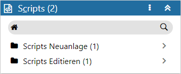
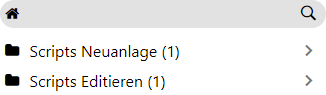
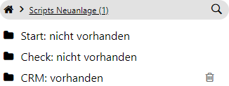

Definitionsbereich - Scripts
In dem Bereich der Scripts können sogenannte Start-, Check- und CRM-Scripts hinterlegt werden. Mit Hilfe dieser Scripts sind u.a. folgende Aktionen möglich:
ü Vorbelegung von Eingabefeldern der CRM-Vorlage
ü Prüfung von Eingaben in der CRM-Vorlage
ü Ausführen von Folgeaktionen in Abhängigkeit von Bedingungen

Ø Kopfzeile
In der Kopfzeile des Bereichs wird neben der Bezeichnung "Scripts" auch die Gesamtanzahl der aktuell hinterlegten Scripts angezeigt.
Achtung
Handelt es sich um einen Workflow-, End- oder Nebenschritt, welcher von einem Musterschritt abgeleitet wurde, so wird diese Verbindung ebenfalls in der Kopfzeile dargestellt.
Ø  Menü
Menü
Durch Anwahl des Menüs werden, abhängig vom aktuell gewählten Workflow-Objekt, weitere Funktionen zur Verfügung gestellt:
ü Entsperren / Sperren
Handelt es
sich um einen Workflow-, End- oder Nebenschritt, welcher von einem Musterschritt
abgeleitet wurde, so kann hier definiert werden, ob die Scripts fix vom
Musterschritt kommen oder editierbar sein sollen.
ü Maximieren / Minimieren
Bei
einem Maximieren werden die Scripts als einziger Bereich in der Definition
angezeigt, bzw. bei einem Minimieren wieder alle Bereiche in der Definition.
Neuanlage / Editieren

Ø Scripts Neuanlage / Scripts Editieren
Der Bereich "Scripts" unterteilt sich zunächst in folgende Unterbereich:
ü Scripts Neuanlage
Wenn ein
Script bei der Neuanlage eines CRM-Schritts ausgeführt werden soll, so muss
dieses unter "Scripts Neuanlage" hinterlegt werden.
ü Scripts Editieren
Wenn ein
Script bei Bearbeiten eines bestehenden CRM-Schritts ausgeführt werden soll, so
muss dieses unter "Scripts Editieren" hinterlegt werden.
Hinweis
Das Drag & Drop von Einträgen in einem "CRM-Kalender" zählt auch zum Editieren.
Script-Typ

Ø Typ
Die beiden Unterbereiche für Neuanlage und Editieren unterteilen sich wiederum in die einzelnen Script-Typen "Start", "Check" und "CRM". Die Erfassung der Scripts erfolgt nach Anwahl des Typs über den VBScript-Editor.
ü Start
Die hier definierten
Scripts werden während des Öffnens der CRM-Vorlage ausgeführt. Dadurch lassen
sich z.B. individuelle Vorbesetzungen in Feldern vornehmen.
ü Check
Die hier definierten
Scripts werden vor dem Speichern des CRM-Falls ausgeführt, d.h. nach Anwahl des
Buttons "Ok", aber noch vor dem Speichern des Schritts. Hierdurch ist es z.B.
möglich, den Inhalt von bestimmten Feldern auf deren Richtigkeit prüfen zu
lassen.
ü CRM
Die hier definierten
Scripts werden nach dem Speichern des CRM-Falls ausgeführt. Dadurch ist es z.B.
möglich an bestimmte Personen eine E-Mail zu schicken, wenn dieses über die
Standard-Aktionen nicht abgedeckt werden kann.
Hinweis 1
Die Funktionen von "CWLMacro" und "General" werden bei dem Typ "CRM" nur von WinLine und WinLine mobile unterstützt. Ein Einsatz in der WebEdition ist nicht möglich!
Hinweis 2
Die Felder einer CRM- Vorlage können über 3 Wege gelesen / beschrieben werden:
ü Fixe
ID
Schreiben
=> CWLMacro.MSetFieldValue 520, 212, "Text
1"
Lesen
=> TEXT = CWLMacro.MGetFieldValue (520, 212)
Achtung
Die IDs können sich bei jeder Vorlagenänderung verschieben.
ü ID Auslesen über den
Namen
Schreiben
=> CWLMacro.MSetFieldValue 520, IdForName("Dringlichkeit"),
"Hoch"
Lesen
=> DLK = CWLMacro.MGetFieldValue (520, IdForName("Dringlichkeit"))
Achtung
Ist die einfachste Variante, aber es muss auf Namensänderungen in der CRM-Vorlage reagiert werden.
ü ID Auslesen über
View/Var
Schreiben
=> CWLMacro.MSetFieldValue 520, IdForViewVar(170,9),
"230A001"
Lesen
=> KONTO = CWLMacro.MGetFieldValue (520, IdForViewVar(170,9))
Achtung
Bei dieser Methode werden Eigenschaften nicht unterstützt!
Ø  Löschen
Löschen
Durch Anwahl dieses Tabellenbuttons wird das Script aus dem Schritt entfernt.